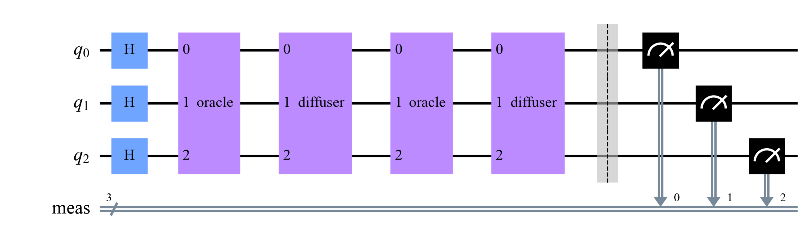
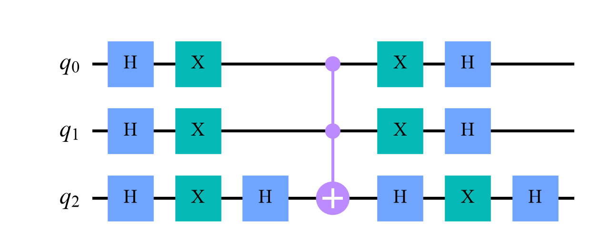
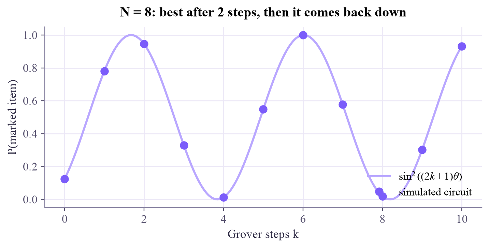
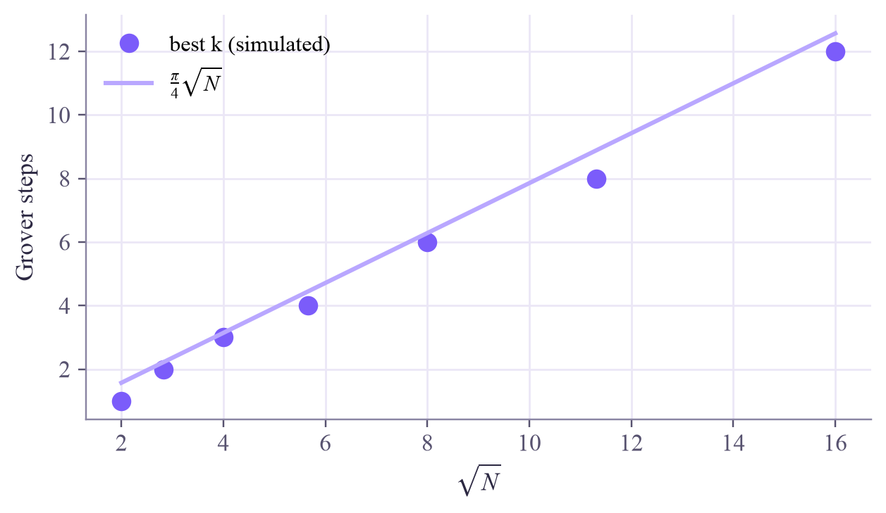

Find one marked item among N with about √N questions: flip its sign, reflect everything about the mean, repeat, and stop at the right moment.

A million boxes, one prize, and no clue where. Classically you open boxes one by one: half a million on average. Grover's algorithm needs about 785 questions. It is this week's tools put together: an oracle with phase kickback, Hadamards and interference.
Number the items with bit strings. An oracle marks the prize by flipping its sign (phase kickback, as this week): , every other item untouched. Start with all items equally likely (H on every qubit), then repeat a Grover step:
The flipped prize sits far below the mean, so the reflection throws it far above; every other amplitude shrinks a little. Each step moves probability onto the prize.
The picture that explains everything: the state always lives in a plane spanned by and (all other items, equally mixed). It starts at a small angle from , with . Two reflections make a rotation, so each step turns the state by towards the prize:
It reaches the prize after about steps. That's a quadratic speedup: instead of . Go further and the rotation overshoots, so the probability falls again. Grover's search must stop at the right moment.
In a circuit, the diffuser is , a sign flip on , and again: a reflection about the starting state, built from the same gates as the oracle.
Mark with a sign, reflect about the mean, repeat about times: the prize's amplitude grows like a rotating arrow.
Press the oracle and the diffuser in turn, or the Grover step button. Watch the bars, the dashed mean, and the arrow on the circle. Tap any bar to hide the prize there.
With 4 qubits, take Grover steps until you pass the best number: the probability falls, and the arrow on the circle turns past the prize. Then try 2 qubits (): one step gives 100%. Notice that after the oracle alone, the probabilities don't change at all; only the diffuser turns signs into probability.
qc-w5d5.ipynb. To change the code and run it yourself, open the notebook in Google Colab (free, in your browser) or download it for your own Jupyter.import numpy as np
import matplotlib.pyplot as plt
from qiskit import QuantumCircuit
from qiskit.quantum_info import Statevector
from qiskit.primitives import StatevectorSampler
def phase_oracle(marked):
"""Flip the sign of one basis state. marked is a bit string in Qiskit order (last character = qubit 0)."""
n = len(marked)
qc = QuantumCircuit(n, name="oracle")
zeros = [q for q, bit in enumerate(reversed(marked)) if bit == "0"]
if zeros:
qc.x(zeros) # now the marked state looks like 11...1
qc.h(n - 1)
qc.mcx(list(range(n - 1)), n - 1) # H, multi-controlled X, H = multi-controlled Z
qc.h(n - 1)
if zeros:
qc.x(zeros)
return qc
def diffuser(n):
"""Reflect every amplitude about the mean (up to an overall sign, which can't be measured)."""
qc = QuantumCircuit(n, name="diffuser")
qc.h(range(n))
qc.x(range(n))
qc.h(n - 1)
qc.mcx(list(range(n - 1)), n - 1)
qc.h(n - 1)
qc.x(range(n))
qc.h(range(n))
return qc
def grover(marked, steps, measure=True):
n = len(marked)
qc = QuantumCircuit(n)
qc.h(range(n)) # every item equally likely
oracle_gate, diffuser_gate = phase_oracle(marked).to_gate(), diffuser(n).to_gate()
for _ in range(steps):
qc.append(oracle_gate, range(n)) # appended as boxes, so the drawing stays readable
qc.append(diffuser_gate, range(n))
if measure:
qc.measure_all()
return qc
display(grover("101", 2).draw("mpl", style="clifford"))
diffuser(3).draw("mpl", style="clifford")

sampler = StatevectorSampler(seed=1)
for steps in [0, 1, 2]:
counts = sampler.run([grover("101", steps)], shots=1000).result()[0].data.meas.get_counts()
print(f"{steps} Grover steps: '101' found {counts.get('101', 0)} times out of 1000")0 Grover steps: '101' found 110 times out of 1000 1 Grover steps: '101' found 784 times out of 1000 2 Grover steps: '101' found 949 times out of 1000
N = 8
theta = np.arcsin(1 / np.sqrt(N))
ks = np.arange(0, 11)
simulated = [Statevector(grover("101", k, measure=False)).probabilities_dict()["101"] for k in ks]
fine = np.linspace(0, 10, 300)
fig, ax = plt.subplots(figsize=(6.4, 3.2), layout="constrained")
ax.plot(fine, np.sin((2 * fine + 1) * theta) ** 2, color="#b9a7ff", lw=2, label=r"$\sin^2((2k+1)\theta)$")
ax.plot(ks, simulated, "o", color="#7b5cfa", ms=7, label="simulated circuit")
ax.set_xlabel("Grover steps k")
ax.set_ylabel("P(marked item)")
ax.set_title("N = 8: best after 2 steps, then it comes back down")
ax.legend(loc="lower right")
plt.show()
rows = []
for n in range(2, 9):
N = 2 ** n
marked = "1" * n # any marked string works the same way
best_k, best_p = 0, 0.0
# TODO: try k = 0, 1, ... up to about pi/4 * sqrt(N) + 2, keep the k with the highest probability
rows.append((n, N, best_k, best_p))
for n, N, best_k, best_p in rows:
print(f"n = {n}, N = {N:3d}: best k = {best_k} (P = {best_p:.3f}), pi/4 sqrt(N) = {np.pi / 4 * np.sqrt(N):.2f}, classical N/2 = {N // 2}")Inside the loop over k: Statevector(grover(marked, k, measure=False)).probabilities_dict().get(marked, 0.0). Keep the largest. int(np.pi / 4 * np.sqrt(N)) + 3 values of are enough.
rows = []
for n in range(2, 9):
N = 2 ** n
marked = "1" * n
probs = [Statevector(grover(marked, k, measure=False)).probabilities_dict().get(marked, 0.0)
for k in range(int(np.pi / 4 * np.sqrt(N)) + 3)]
best_k = int(np.argmax(probs))
rows.append((n, N, best_k, probs[best_k]))
for n, N, best_k, best_p in rows:
print(f"n = {n}, N = {N:3d}: best k = {best_k:2d} (P = {best_p:.3f}), pi/4 sqrt(N) = {np.pi / 4 * np.sqrt(N):5.2f}, classical N/2 = {N // 2}")
sqrtN = [np.sqrt(N) for _, N, _, _ in rows]
fig, ax = plt.subplots(figsize=(5.6, 3.2), layout="constrained")
ax.plot(sqrtN, [k for _, _, k, _ in rows], "o", color="#7b5cfa", ms=8, label="best k (simulated)")
ax.plot(sqrtN, np.pi / 4 * np.array(sqrtN), color="#b9a7ff", lw=2, label=r"$\frac{\pi}{4}\sqrt{N}$")
ax.set_xlabel(r"$\sqrt{N}$")
ax.set_ylabel("Grover steps")
ax.legend()
plt.show()
print("A straight line in sqrt(N): searching 100 times more items takes only 10 times more steps.")n = 2, N = 4: best k = 1 (P = 1.000), pi/4 sqrt(N) = 1.57, classical N/2 = 2 n = 3, N = 8: best k = 2 (P = 0.945), pi/4 sqrt(N) = 2.22, classical N/2 = 4 n = 4, N = 16: best k = 3 (P = 0.961), pi/4 sqrt(N) = 3.14, classical N/2 = 8 n = 5, N = 32: best k = 4 (P = 0.999), pi/4 sqrt(N) = 4.44, classical N/2 = 16 n = 6, N = 64: best k = 6 (P = 0.997), pi/4 sqrt(N) = 6.28, classical N/2 = 32 n = 7, N = 128: best k = 8 (P = 0.996), pi/4 sqrt(N) = 8.89, classical N/2 = 64 n = 8, N = 256: best k = 12 (P = 1.000), pi/4 sqrt(N) = 12.57, classical N/2 = 128

A straight line in sqrt(N): searching 100 times more items takes only 10 times more steps.
Grover-style "amplitude amplification" appears inside many proposed quantum machine-learning speedups, for example in quantum versions of nearest-neighbor search. Read those claims carefully: the speedup is at most quadratic, needs fault-tolerant hardware, and assumes the data can be loaded into qubits quickly, which is often the hard part.
Nielsen and Chuang, section 6.1 ("The quantum search algorithm"), with the geometric picture of today's circle in section 6.1.3. The original paper is Grover, "A fast quantum mechanical algorithm for database search" (1996).
That's week 5 of Quantum Computing! Saturday: optional flashback. Next week: noise and real hardware.

Tap the button to save it. Short and steady wins.
Marked by mistake? Undo